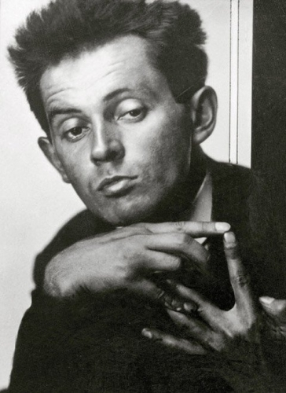

<--Back
Egon Schiele

본명: 에곤 실레
출생: 1890년 6월 12일 오스트리아
사망: 1918년 10월 31일
철도청 고급 관료 집안에서 태어나 유복한 유년 시절을 보냈으며,
위로 두 누이 아래로 여동생이 있었다. 2살경부터 색연필과 종이를 잡고 그림을 그렸다고 하며,
어릴 때는 철도 미니어처를 가지고 노는 것을 좋아했고 그것들을 그린 데생도 몇 점 남아있다.
이는 그의 아버지의 영향인데 아버지 아돌프 실레는 톨른역의 역장이었다. 그의 아버지는
그가 어릴 때부터 열성적으로 그림을 그리자 그의 스케치북을 태워버렸다고 한다.
 Egon Schiele
Egon Schiele